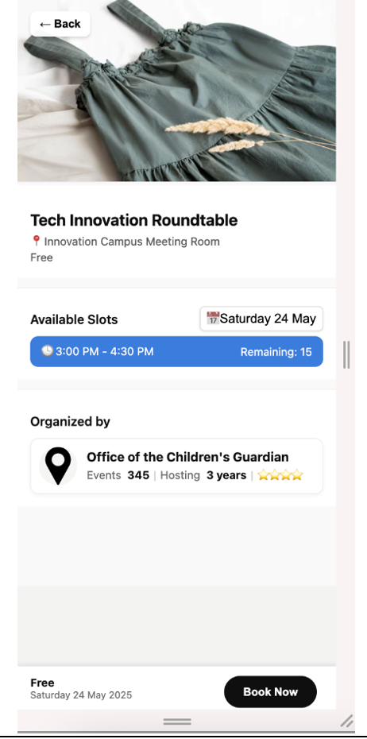
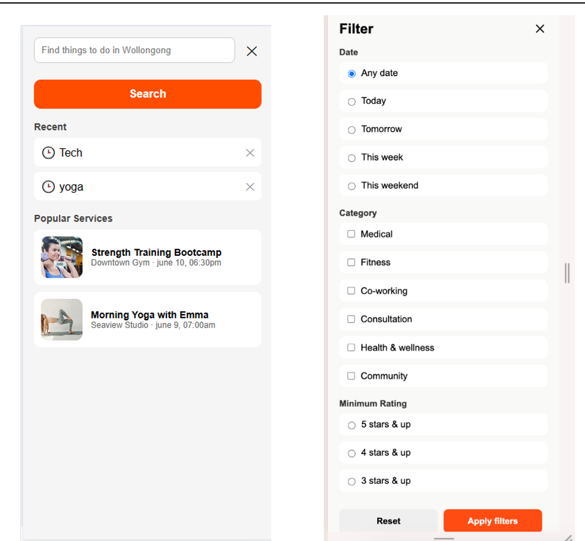
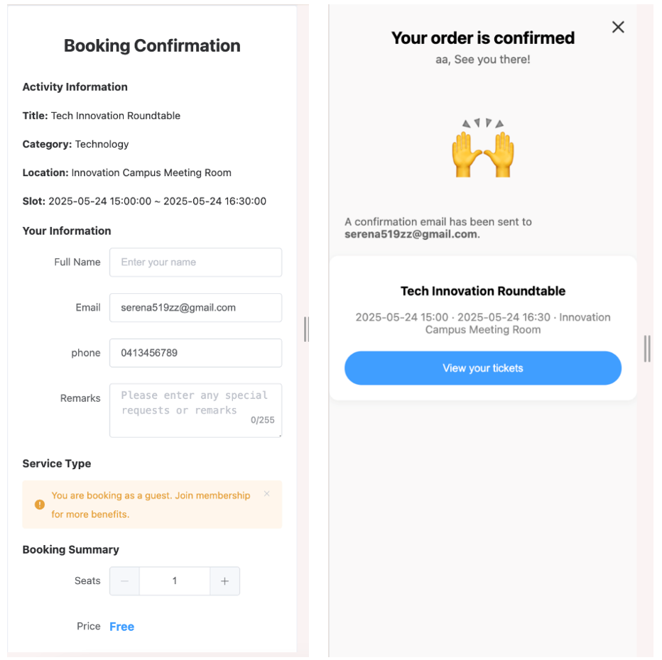
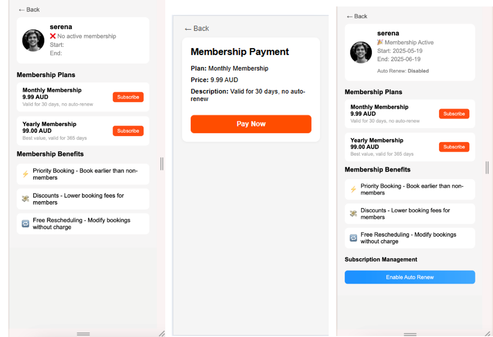

Project Overview
This project presents a booking management system where users can browse available services, view details, search and filter activities, complete a booking, and manage their booking history.
Mobile Application Project
This project presents a booking management system where users can browse available services, view details, search and filter activities, complete a booking, and manage their booking history.
I worked on the user flow and interface structure, connecting key screens such as discovery, service details, booking confirmation, membership, and booking management into a practical mobile app experience.




